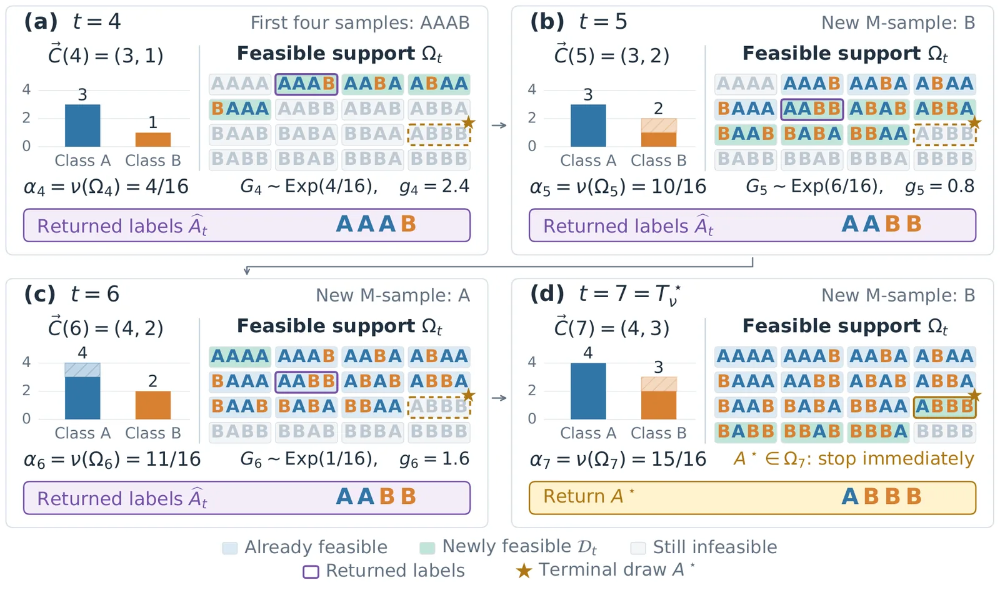
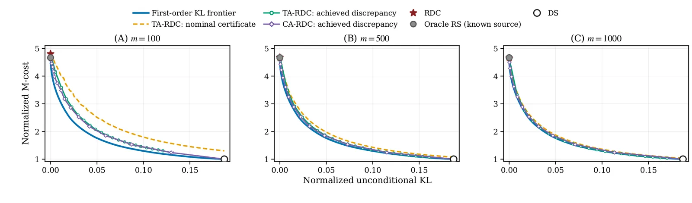

O problema: outputs de IA nem sempre refletem a distribuição que você precisa
Modelos generativos de IA aprenderam vieses históricos e representacionais presentes em seus dados de treino. Isso leva a disparidades sistemáticas em atributos protegidos como raça, gênero e idade. Mesmo um modelo bem alinhado a instruções gerais pode gerar distribuições de atributos que diferem daquelas exigidas por uma aplicação específica.
Este paper introduz o conceito de statistical attribute alignment (SAA): garantir que a distribuição de atributos categóricos designados nos outputs gerados concorde com uma distribuição-alvo especificada pelo usuário. Dois casos de uso motivam o trabalho. Primeiro, fairness: os atributos são covariáveis protegidas e o alvo especifica a representação desejada. Segundo, geração de dados sintéticos: quando você precisa que os dados gerados sejam representativos de uma população-alvo — por exemplo, um dataset sintético para auditar um sistema de reconhecimento facial deve refletir a população auditada.
A abordagem do paper é pós-processamento com acesso black-box: o usuário pode apenas fazer queries repetidas ao modelo generativo, sem acesso aos pesos, arquitetura ou procedimento de treino. O objetivo é retornar m ≥ 1 outputs cuja distribuição conjunta de atributos seja o mais próxima possível do alvo, minimizando o número esperado de queries.

Formulação: custo de queries versus discrepância estatística
O setup é o seguinte. Um modelo generativo recebe um prompt x e produz um output Y ~ P(· | x). Cada output tem um atributo categórico A = ϕ(Y) ∈ [k], onde ϕ é um anotador (humano ou automático). A distribuição de atributos na fonte é p = (p₁, ..., pₖ), onde pᵢ = Pr(A = i). O usuário especifica uma distribuição-alvo q e quer gerar m outputs cuja distribuição conjunta de atributos siga uma lei ν.
Os autores definem dois tipos de algoritmos de pós-processamento. Algoritmos universalmente exatos garantem que a distribuição conjunta dos atributos dos m outputs é exatamente ν, independentemente das taxas da fonte p. Algoritmos aproximados permitem uma discrepância controlada, medida por f-divergências (como KL, chi-quadrado ou variação total).
O custo de um algoritmo é o número esperado de queries ao modelo, chamado M-cost. O trade-off fundamental é: quanto você está disposto a gastar em queries para reduzir a discrepância estatística? O paper desenvolve algoritmos que minimizam o M-cost para um dado nível de discrepância e demonstra sua otimalidade assintótica quando m → ∞.
Algoritmo RDC: random demand coupon collector
O algoritmo central para alinhamento exato é o random demand coupon collector (RDC), apresentado no Algoritmo 1 do paper. A ideia é inspirada no problema clássico do colecionador de cupons, mas com demandas aleatórias.
Primeiro, o RDC amostra uma sequência-alvo ordenada: sorteia um vetor de contagens L ~ Mult(m, q), onde cada componente Lᵢ é o número de outputs desejados com atributo i. Depois, faz queries ao modelo até que cada demanda seja atendida: para cada i, precisa coletar pelo menos Lᵢ outputs com atributo i. O algoritmo para no tempo T⋆ = inf{t : C(t) ≥ L}, onde C(t) é o histograma dos atributos observados até o tempo t.
O RDC é universalmente exato: a distribuição dos atributos dos m outputs retornados é exatamente q⊗ᵐ (produto de m cópias independentes de q), independentemente de p. O Teorema 4 garante isso. O Teorema 6 mostra que, para m = 1, o RDC é admissível: nenhum outro algoritmo pode dominá-lo simultaneamente em custo e discrepância sobre todo o simplex de taxas fonte.
Para m grande, o Teorema 7 caracteriza o M-cost assintótico. Sob condições regulares, o custo normalizado Eₚ[T⋆]/m converge para ρ⋆(p, q) = Σᵢ (qᵢ/pᵢ) quando m → ∞. Essa é a taxa ótima: nenhum algoritmo universalmente exato pode fazer melhor assintoticamente.

Alinhamento aproximado: certificados e fronteiras ótimas
Nem sempre é necessário alinhamento exato. O paper desenvolve algoritmos aproximados que trocam discrepância por custo de queries. A discrepância é medida por f-divergências separáveis: Dₓ(P‖ν) = Σₜ₌₁ᵐ Dₓ(Pₜ‖νₜ), onde Pₜ é a distribuição marginal do t-ésimo output.
O Teorema 9 mostra que direct-sampling (DS) — simplesmente fazer m queries e retornar os outputs — tem discrepância positiva sempre que p ≠ q. O custo é mínimo (exatamente m queries), mas não há controle sobre a distribuição resultante.
O Teorema 20 caracteriza a fronteira custo-discrepância ótima de primeira ordem. Para KL divergência, a taxa ótima assintótica é ρ⋆(p, q; d) = Σᵢ qᵢ · h(pᵢ/qᵢ, d/qᵢ), onde h é uma função auxiliar que resolve um problema de otimização local. Essa fronteira descreve o melhor trade-off possível entre custo normalizado e discrepância normalizada quando m → ∞.
O algoritmo TA-RDC (thresholded anytime RDC) implementa essa fronteira. Ele roda uma versão anytime do RDC até atingir o tempo de parada T⋆ ou até que um certificado de f-divergência em um nível ε ≥ 0 seja alcançado. O Teorema 18 garante que o certificado é válido: a discrepância incondicional real é no máximo ε. O Teorema 19 mostra que TA-RDC atinge a taxa ótima de primeira ordem.
Experimentos em simulação: validando a teoria
Os autores testam os algoritmos em um cenário sintético com k=8 atributos, taxas fonte p = (0.03, 0.05, 0.08, 0.12, 0.16, 0.18, 0.18, 0.20) e alvo q = (0.14, 0.12, 0.13, 0.15, 0.14, 0.12, 0.11, 0.09), variando o tamanho do output m ∈ {100, 500, 1000}.
Cinco métodos são comparados. DS (direct-sampling) faz m queries e tem discrepância positiva. RDC é universalmente exato e tem discrepância zero, mas custo maior. Oracle RS (oracle rejection sampling) também tem discrepância zero e minimiza o M-cost entre algoritmos exatos que conhecem as taxas fonte, mas não é prático porque requer conhecimento de p. TA-RDC e CA-RDC (capped anytime RDC) são aproximados e traçam perfis custo-discrepância.
A Figura 3 mostra os perfis custo-discrepância normalizados. O eixo horizontal é a discrepância KL normalizada, o vertical é o M-cost normalizado. RDC e Oracle RS ficam no ponto (0, custo), com discrepância zero. DS fica em (discrepância positiva, 1), custo mínimo. TA-RDC traça uma curva entre esses extremos, aproximando-se da fronteira ótima de primeira ordem conforme m cresce.
Os resultados confirmam a teoria: para m=1000, o perfil realizado de TA-RDC está muito próximo da fronteira ótima teórica. Conforme m aumenta, a convergência para a taxa assintótica fica mais evidente.

Aplicação 1: geração texto-para-imagem com atributos demográficos
Os autores aplicam o método a modelos texto-para-imagem (DALL-E 3, Stable Diffusion XL, Flux.1 Pro). O prompt pede uma foto de grupo com uma contagem-alvo de atributos demográficos (gênero × idade × raça, totalizando 12 categorias). Um anotador automático (baseado em FairFace) classifica cada pessoa gerada.
O desafio aqui é que nem toda imagem gerada é compliant: pode conter número errado de pessoas, rostos não detectáveis, etc. Os autores estendem o framework para lidar com outputs off-support: aqueles que não podem ser usados porque violam restrições estruturais.
A Figura 15 mostra exemplos de gerações compliant (número correto de pessoas), não-compliant on-support (número errado mas rostos detectáveis) e off-support (rostos não detectáveis). O método filtra apenas as gerações compliant para formar o batch final.
Os resultados mostram que o pós-processamento melhora significativamente o alinhamento. Por exemplo, para DALL-E 3 com m=8 outputs, o método reduz a discrepância KL de ~0.5 (direct-sampling) para ~0.05 (RDC), com um custo de ~2.5 queries por output aceito. Isso complementa intervenções baseadas em prompting: mesmo com prompts cuidadosamente elaborados, a distribuição resultante raramente é exata.
Aplicação 2: geração de personas geocodificadas
A segunda aplicação é geração de personas sintéticas para pesquisa de opinião. O objetivo é criar um conjunto de personas cujas características demográficas (idade, gênero, raça, educação, região) sigam a distribuição da população dos EUA, conforme dados do censo.
Os autores usam um pipeline que combina um LLM (GPT-4) para gerar biografias e um modelo de geocodificação para atribuir localizações. O atributo composto tem k=480 categorias (combinando 5 variáveis demográficas). O alvo é a distribuição conjunta empírica do censo.
Aqui, o desafio é a alta dimensionalidade e a esparsidade: muitas combinações de atributos são raras. O método RDC ainda funciona, mas o custo cresce. Os autores comparam com direct-sampling e mostram que o pós-processamento reduz a discrepância KL de ~0.08 para ~0.01, com um custo de ~1.8 queries por output aceito.
Essa aplicação ilustra um caso onde retreinar ou ajustar o modelo seria impraticável: a distribuição-alvo é específica de uma aplicação (um estudo de opinião particular) e muda de projeto para projeto. O pós-processamento black-box permite adaptar o modelo a cada novo alvo sem redesenhar o pipeline de treino.
O que o paper NÃO resolve
Primeiro, o método só alinha a distribuição de atributos, não garante outras formas de fairness. Por exemplo, não controla a qualidade individual dos outputs nem garante paridade de performance em tarefas downstream. A escolha de quais atributos proteger e qual distribuição-alvo usar é uma decisão normativa, fora do escopo técnico do paper.
Segundo, o framework assume que os atributos são categóricos e observáveis (ou anotáveis). Atributos contínuos ou latentes exigiriam extensões não desenvolvidas aqui. Além disso, o método não lida com dependências complexas entre atributos e conteúdo: se a qualidade dos outputs varia sistematicamente com o atributo, o pós-processamento pode inadvertidamente amplificar esses vieses.
Terceiro, os resultados de otimalidade são assintóticos (m → ∞). Para m pequeno, os algoritmos propostos podem não ser admissíveis: pode haver outros métodos que melhorem simultaneamente custo e discrepância. O paper reconhece isso e sugere que desenvolver algoritmos admissíveis para m finito é uma direção futura.
Quarto, os experimentos com modelos reais são limitados a dois domínios (imagens e personas). Não há garantias de que o método funcione igualmente bem em outros contextos (vídeo, áudio, código) ou com outros tipos de anotadores. A validação empírica é promissora, mas não exaustiva.
Contexto: por que pós-processamento, não retreinamento?
Métodos de alinhamento tradicionais intervêm nos dados de treino, na arquitetura, no procedimento de treino (RLHF, DPO, constitutional AI) ou nos prompts. Cada um tem vantagens e limitações. Retreinar é caro e requer acesso aos pesos. Prompting é flexível, mas não oferece garantias estatísticas precisas.
O pós-processamento black-box é complementar. Ele permite ajustar a distribuição de outputs de um modelo já treinado e alinhado, sem retreinar. Isso é especialmente útil quando o modelo é servido via API, quando a distribuição-alvo muda frequentemente, ou quando você quer compor múltiplas formas de alinhamento (por exemplo, alinhar primeiro a preferências via RLHF, depois a uma distribuição demográfica via pós-processamento).
Além disso, conforme os custos de query caem (como documentado em Maslej et al., 2025, citado no paper), gerar batches maiores fica mais barato. Isso torna algoritmos como RDC e TA-RDC cada vez mais práticos. O custo adicional de queries é compensado pela flexibilidade e pela garantia estatística.
Direções futuras: admissibilidade e anotadores ruidosos
Os autores apontam várias direções de pesquisa. Primeira, caracterizar algoritmos admissíveis para m finito: métodos que não são dominados por nenhum outro em custo e discrepância. O RDC é admissível para m=1, mas para m>1 a questão fica em aberto.
Segunda, estender o framework para anotadores ruidosos. O paper modela brevemente o erro de anotação via matriz de confusão, mas não desenvolve algoritmos que corrijam esse erro. Uma abordagem seria estimar a matriz de confusão e ajustar as taxas-alvo, mas isso requer amostras rotuladas de alta qualidade.
Terceira, explorar outras f-divergências além de KL. O paper foca em KL porque ela tem propriedades analíticas convenientes, mas outras divergências (chi-quadrado, Hellinger, variação total) podem ser mais apropriadas em certos contextos. A fronteira ótima muda com a escolha da divergência.
Quarta, aplicar o método a outros domínios e modalidades. Os experimentos cobrem imagens e personas textuais, mas não vídeo, áudio, código ou outros tipos de outputs estruturados. Cada domínio pode apresentar desafios específicos (por exemplo, atributos temporais em vídeo).
Conclusão: alinhamento estatístico como peça do quebra-cabeça
O paper oferece uma formulação matemática rigorosa para um problema prático: ajustar a distribuição de atributos de outputs generativos sem retreinar o modelo. Os algoritmos propostos (RDC, TA-RDC, CA-RDC) são teoricamente ótimos no limite assintótico e empiricamente eficazes em experimentos com modelos reais.
A contribuição principal é mostrar que, sob acesso black-box, é possível obter alinhamento estatístico exato ou aproximado com custo de queries próximo do ótimo. Isso complementa métodos de alinhamento baseados em treino ou prompting, oferecendo uma alavanca adicional para ajustar modelos a requisitos específicos de aplicação.
As limitações são claras: o método não resolve todos os aspectos de fairness, assume anotadores confiáveis, e os resultados de otimalidade são assintóticos. Mas, dentro de seu escopo, o trabalho é sólido e abre caminho para pesquisa futura em pós-processamento adaptativo de modelos generativos.
O que fica
- O paper introduz statistical attribute alignment (SAA): ajustar a distribuição de atributos categóricos em outputs de IA generativa via pós-processamento black-box, sem retreinar o modelo.
- O algoritmo RDC (random demand coupon collector) garante alinhamento exato e é assintoticamente ótimo em custo de queries quando o número de outputs m → ∞.
- Experimentos com DALL-E 3, Stable Diffusion e GPT-4 mostram que o método reduz discrepância KL de ~0.5 para ~0.05 em tarefas de geração demográfica, complementando prompting.
- Limitações: assume anotadores confiáveis, só alinha distribuições (não qualidade individual), e otimalidade é assintótica — para m pequeno, pode haver métodos melhores.
Paper original: Statistical attribute alignment for black-box generative AI via output post-processing
Comentários
Nenhum comentário ainda. Seja o primeiro.